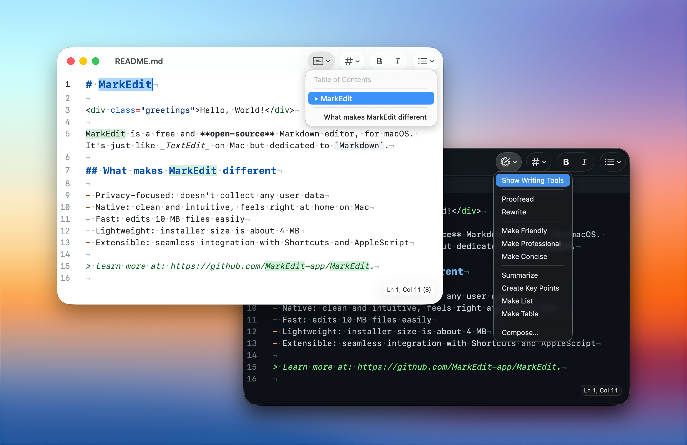
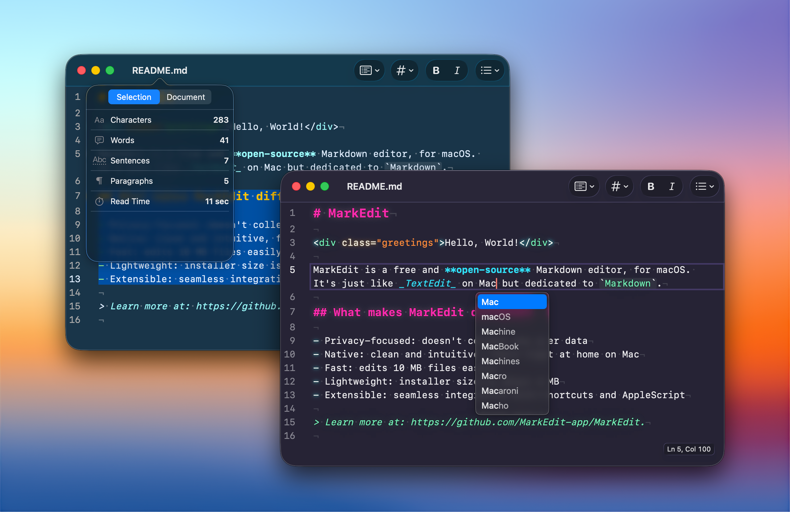
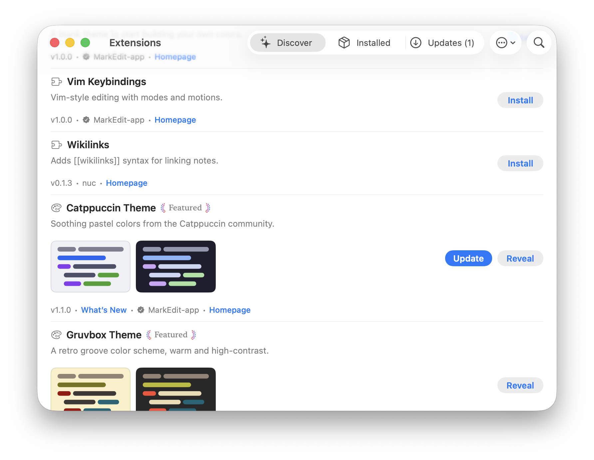

A good Mac citizen.
Familiar windows, keyboard shortcuts, and the little things you expect. From force-touch word lookup to macOS Writing Tools, your editor belongs here.
Markdown, made for Mac
A little space for your next big idea. MarkEdit is a free,
open-source Markdown editor that feels right at home on your Mac.
macOS 26 or later Older Mac?

Intentionally simple
Like TextEdit, but dedicated to Markdown.
Thoughtful details, without a whole new workflow to learn.
Familiar windows, keyboard shortcuts, and the little things you expect. From force-touch word lookup to macOS Writing Tools, your editor belongs here.
Multi-caret editing, code folding, and large files handled with ease. A small app with a capable editing engine, built on CodeMirror 6.
Standard Markdown, not a proprietary format. MarkEdit follows GitHub Flavored Markdown and collects no user data. Your documents are your business.
A space that feels like you
A quiet light theme for the morning. Something darker for a late-night idea. Find your favorite colors, choose your font, and settle in.
Find your theme

Small at heart. Room to grow.
Add a preview pane, Vim keybindings, or a favorite theme. Discover extensions in the app, and make MarkEdit fit the way you work.
Explore extensionsMade with care. Shared freely.
MarkEdit is a tool we use every day and keep improving for ourselves. We share it openly, hoping it makes a little room for your ideas, too.
Meet the project on GitHubA few good questions
Yes. MarkEdit is free and open source, released under the MIT License. There is no paid tier to unlock. You can read the code, report a bug, or contribute on GitHub.
The current release requires macOS 26 or later. For Macs running macOS 12 through 15, you can find compatible releases in the installation guide.
Absolutely. Install the optional Preview extension for a live preview pane. The core app stays focused on editing; you choose the extras.
Your next idea starts here
Free and open source. Just download and write.
Prefer Homebrew? brew install --cask markedit